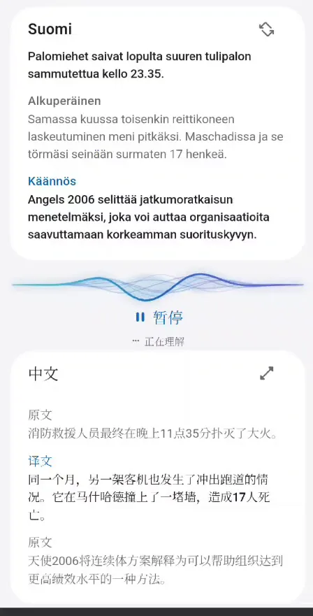

Independent product · Android · silto.fi AI
Silto
Real-time Chinese ⇄ Finnish interpretation for face-to-face conversations – at the doctor’s, at school, at an office counter. AI listens, translates and speaks; nothing is stored. Very few tools are built for this language pair. I designed and built the whole product on my own.
- Flutter
- Node.js
- WebSocket
- Speechmatics
- Azure Speech
- OpenAI API
- PostgreSQL
- Stripe
The hard parts
- Finnish speech recognitionGeneral speech models misheard everyday spoken Finnish and cut long turns in the middle of a sentence.I compared speech engines on real Finnish recordings, including colloquial speech, chose Speechmatics’ real-time medical model, and tuned voice detection so long turns stay whole.
- Chinese sentence breakingChinese has no spaces, so the system treated a whole passage as one “word” and never split it for translation.Unicode word segmentation for Chinese, and complete confirmed sentences translated together instead of fragments.
- Text that keeps jumpingSpeech recognition keeps changing its guess while people talk; translating every guess makes the screen jump and wastes AI calls.Live drafts are only shown; confirmed text goes to the OpenAI API for translation, and a late correction replaces the earlier line.
- Medical accuracyA missed “not” or a wrong dose can be dangerous.A test set of medical sentences that checks negations, numbers, doses and units – used to choose the translation model.
- Who is speaking?Pressing a button before every turn breaks the conversation.Automatic Chinese / Finnish detection picks the direction for each turn.

500+automated tests for the speech and translation pipeline
2speech engines: Finnish and Chinese
0recordings kept after a conversation